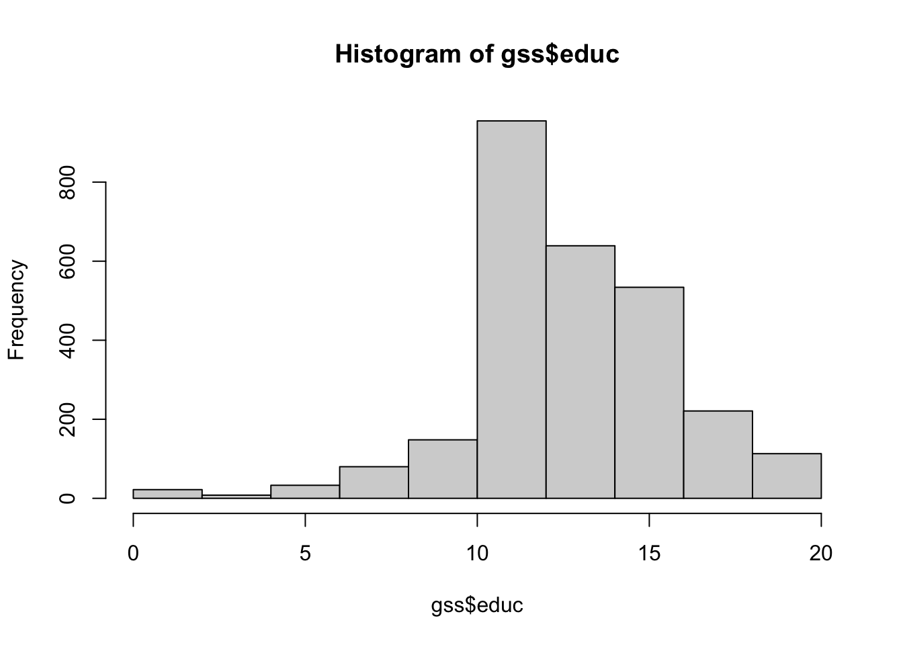
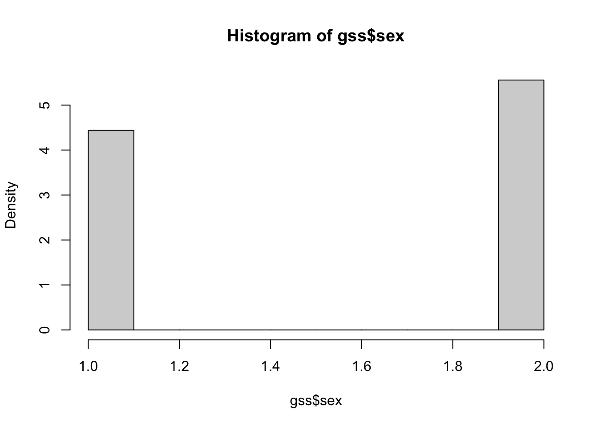

install.packages(c("tidyverse", "psych", "haven"))1 Getting Started with R and RStudio
Data for this chapter: descriptive_gss.dta
Data file needed
Copy descriptive_gss.dta into this project folder before rendering.
This chapter assumes you have R and RStudio installed but not much beyond that. We will load some packages, read in a dataset, look at what is inside it, and make a couple of quick plots. The data come from the General Social Survey.
1.1 Load in some useful R packages
Packages are collections of functions written by other R users. They are also visible on the right side menu under Packages. A handful get used so often that it makes sense to load them at the start of nearly every session. If you do not have these in your library yet, click Install in the Packages menu, or run install.packages() once.
Warning: package 'ggplot2' was built under R version 4.5.2Keep all of your library() calls at the top of the document rather than scattering them through it. Rendering a Quarto file runs the code top to bottom in a fresh session, so a package loaded halfway down cannot help the code above it.
Each of these does something specific. tidyverse is a bundle of packages for data management and graphics. psych gives us descriptive statistics and, later in the course, reliability analysis. haven reads files written by other statistics programs, which is what we need next.
1.2 Load in the data
Our dataset is a Stata file, so we use read_dta() from haven. Then glimpse() shows the structure: how many rows, how many columns, what type each column is, and the first few values.
Rows: 2,765
Columns: 16
$ id <dbl> 2331, 2003, 1221, 2051, 2465, 546, 1291, 732, 303, 2700, 855,…
$ hrs1 <dbl+lbl> NA, NA, NA, NA, 50, 60, 40, 25, NA, 40, 64, 45, 60, 85, N…
$ marital <dbl+lbl> 1, 3, 1, 1, 1, 1, 5, 2, 1, 1, 1, 1, 1, 1, 2, 5, 1, 1, 5, …
$ childs <dbl+lbl> 3, 8, 3, 2, 0, 0, 0, 3, 3, 2, 3, 3, 2, 3, 6, 0, 4, 2, 0, …
$ age <dbl+lbl> 71, 69, 40, 60, 31, 37, 23, 86, 70, 42, 41, 30, 43, 48, 7…
$ educ <dbl+lbl> 18, 11, 19, 13, 11, 19, 11, 11, 13, 12, 12, 12, 13, 20, 1…
$ sex <dbl+lbl> 1, 1, 1, 1, 1, 1, 1, 1, 1, 1, 1, 1, 1, 1, 1, 1, 1, 1, 1, …
$ polviews <dbl+lbl> 4, 4, NA, 5, 4, 2, 1, 4, 4, 3, 6, NA, 5, 5, N…
$ wwwhr <dbl+lbl> NA, NA, 7, 1, 0, 3, NA, NA, NA, 3, 5, 20, 1, 2, N…
$ trustpeo <dbl+lbl> 4, 1, NA, 1, 2, 2, NA, 1, 4, 1, 2, NA, 5, 2, N…
$ wantbest <dbl+lbl> 2, 4, NA, 2, 2, 4, NA, 4, 1, 2, 2, NA, 1, 3, N…
$ advantge <dbl+lbl> 3, 2, NA, 1, 2, 2, NA, 2, 2, 2, 1, NA, 4, 4, N…
$ goodlife <dbl+lbl> 4, NA, NA, NA, NA, 1, 2, 2, NA, NA, NA, NA, 3, NA, N…
$ deckids <dbl+lbl> NA, NA, 4, NA, NA, NA, NA, NA, NA, NA, NA, 3, NA, NA, N…
$ strsswrk <dbl+lbl> NA, NA, 5, NA, NA, NA, NA, NA, NA, NA, NA, 2, NA, NA, …
$ satjob7 <dbl+lbl> NA, NA, 3, NA, NA, NA, NA, NA, NA, NA, NA, 3, NA, NA, N…Use a plain filename rather than a full path like C:/Users/yourname/Downloads/descriptive_gss.dta. Keeping the data file in the same folder as your document is what lets the code run on someone else’s computer, which matters as soon as you share anything.
A related function you will use interactively
View(gss) opens a spreadsheet-style window for browsing the data. It is useful while you are exploring, but it opens a window rather than printing anything, so it does nothing in a rendered document. Use it in the console freely; leave it out of chunks you intend to render.
1.3 What does a variable actually contain?
Stata files often carry labels describing what a variable measures and what its values mean. str() shows you both.
str(gss$satjob7) dbl+lbl [1:2765] NA, NA, 3, NA, NA, NA, NA, NA, NA, NA, NA, 3, NA, NA, N...
@ label : chr "job satisfaction in general"
@ format.stata: chr "%37.0g"
@ labels : Named num [1:10] 0 1 2 3 4 5 6 7 8 9
..- attr(*, "names")= chr [1:10] "nap" "completely satisfied" "very satisfied" "fairly satisfied" ...Notice what came through. haven gives this variable the class haven_labelled. It holds numbers, but attached to those numbers is a label describing the variable and a set of value labels mapping each number to a meaning.
This is worth checking rather than assuming you remember the coding. It is also the first hint of something that matters throughout the course: a variable can be stored as a number while meaning a category.
1.4 Describe the dataset
The describe() function from psych reports means, standard deviations, ranges and more for every variable at once. The fast = TRUE option trims the output to the columns you usually want.
describe(gss, fast = TRUE) vars n mean sd median min max range skew kurtosis se
id 1 2765 1383.00 798.33 1383 1 2765 2764 0.00 -1.20 15.18
hrs1 2 1729 41.78 14.62 40 1 89 88 0.28 1.31 0.35
marital 3 2765 2.54 1.67 2 1 5 4 0.49 -1.42 0.03
childs 4 2760 1.81 1.69 2 0 8 8 1.07 1.45 0.03
age 5 2751 46.28 17.37 44 18 89 71 0.45 -0.70 0.33
educ 6 2753 13.36 2.97 13 0 20 20 -0.45 1.78 0.06
sex 7 2765 1.56 0.50 2 1 2 1 -0.22 -1.95 0.01
polviews 8 1331 4.12 1.39 4 1 7 6 -0.15 -0.31 0.04
wwwhr 9 1574 5.91 8.87 3 0 112 112 3.99 27.35 0.22
trustpeo 10 1131 1.94 1.00 2 1 5 4 1.07 0.50 0.03
wantbest 11 1124 2.40 0.94 2 1 5 4 0.61 0.00 0.03
advantge 12 1129 2.20 0.99 2 1 5 4 0.66 -0.28 0.03
goodlife 13 909 2.17 1.01 2 1 5 4 0.85 0.07 0.03
deckids 14 538 3.21 1.12 4 1 5 4 -1.01 -0.41 0.05
strsswrk 15 1000 3.24 1.19 3 1 5 4 -0.19 -1.03 0.04
satjob7 16 820 2.68 1.30 2 1 7 6 1.10 1.23 0.05This output is handy for your own records. Paste it into a document and you have a rough codebook to share with collaborators.
Read it with some care, though. describe() will compute a mean for any numeric column, including ones where a mean means nothing. We will come back to that in a moment.
1.5 Create a quick histogram
A frequency histogram is a good quick-and-dirty way to explore a continuous variable. Base R’s hist() needs nothing but the variable itself.
hist(gss$educ)
Education in years is a sensible variable for this treatment. It takes many values, the values are ordered, and the distances between them mean something: the step from 12 years to 13 is the same size as the step from 15 to 16.
Look at where the distribution piles up. Educational attainment tends to cluster at the points where credentials are awarded, and the shape usually shows that.
1.6 Another histogram
hist(gss$sex, freq = FALSE)
The freq = FALSE argument switches the vertical axis from counts to density, so the bars represent proportions rather than numbers of people.
This plot is worth pausing on, because it shows something the previous one did not. sex has two categories, and R will happily draw a histogram of it, because the values are stored as numbers. But the picture is not telling us much. There is no meaningful spread, no shape, and the bins do not correspond to anything real. It answers a question we did not need a plot for.
For a variable like this, a table is more informative and takes less space:
table(gss$sex)
1 2
1228 1537 The same logic applies to that mean in the describe() output. If sex is coded 1 and 2, its mean is some number between 1 and 2, which describes no actual respondent.
Numbers that are really categories
This is the single most consequential thing to internalize early. Many variables are stored as numbers but mean categories: sex, marital status, region, program type, job satisfaction on a labelled scale.
R cannot tell the difference on its own. It will compute means, draw histograms, and later fit regressions treating those codes as quantities, all without warning you.
The fix is to convert them to factors, so that R treats them as categories:
as_factor() from haven uses the value labels that came along with the Stata file. We will use this constantly once we start modeling, because a categorical variable entered as a number produces a model that runs and answers the wrong question.
1.7 When something breaks
R’s error messages are unhelpful at first and become readable with practice. The three you will meet most often:
could not find function "..." almost always means a package is not loaded. Check your library() calls at the top.
object '...' not found means you are referring to something that does not exist in the current session, usually a typo or an object created in a chunk you have not run.
cannot open file '...' means the data file is not where R is looking. Check the spelling, and check that the file sits in the same folder as your document.
When you are stuck, ?function_name opens the help page for any function. The examples at the bottom of those pages are often more useful than the descriptions at the top.